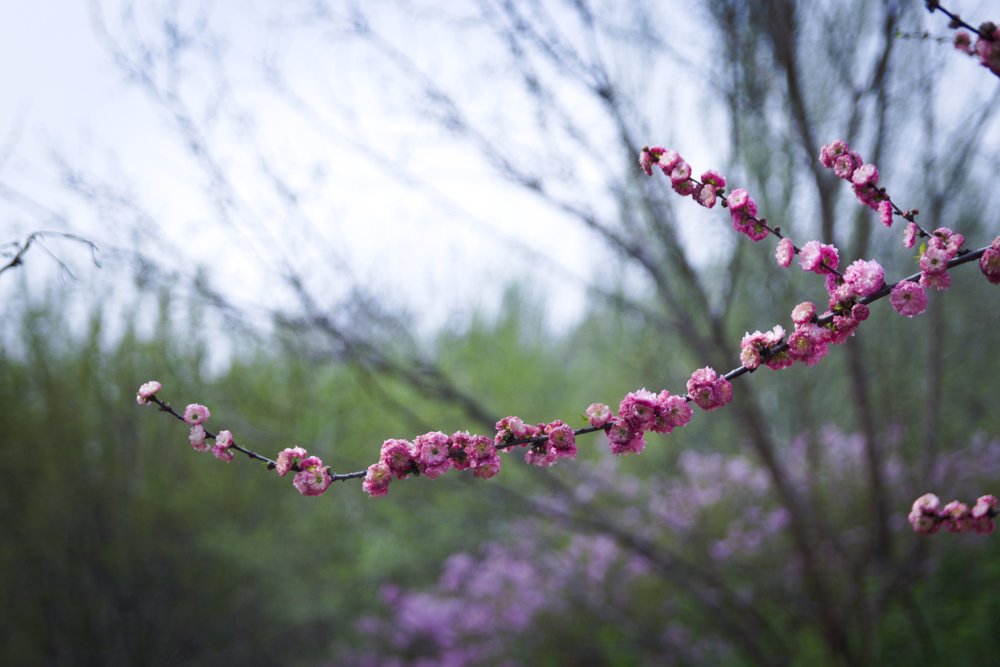
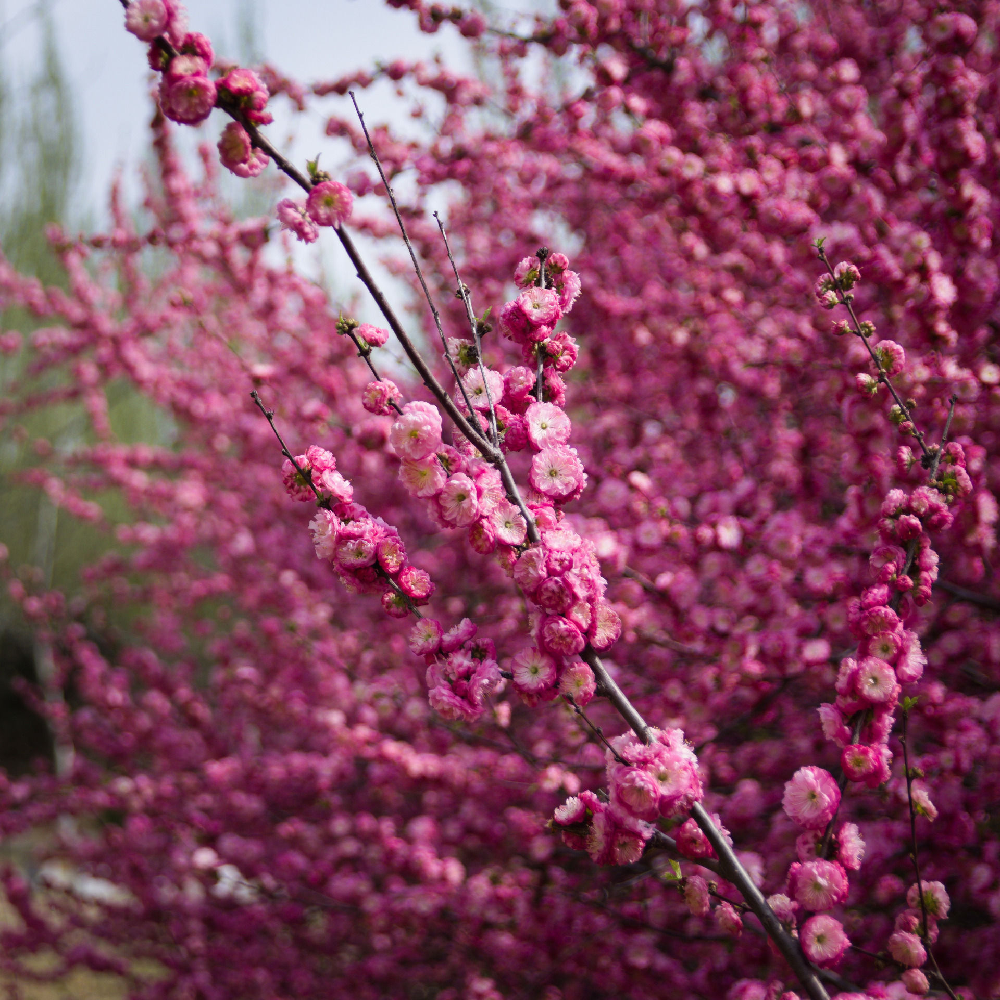
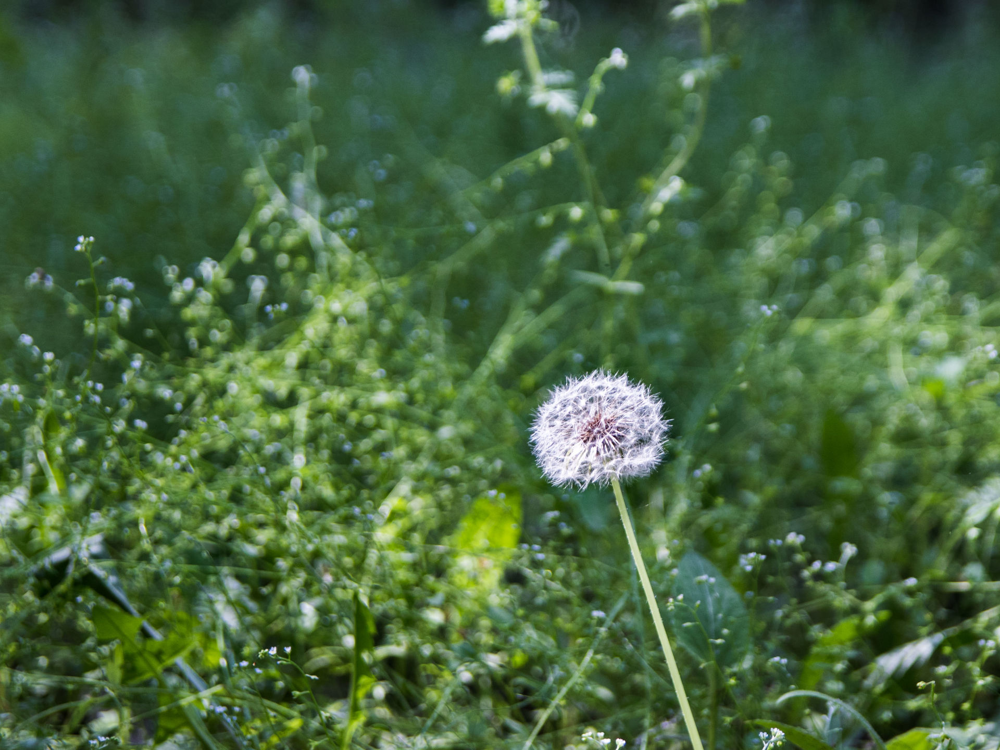
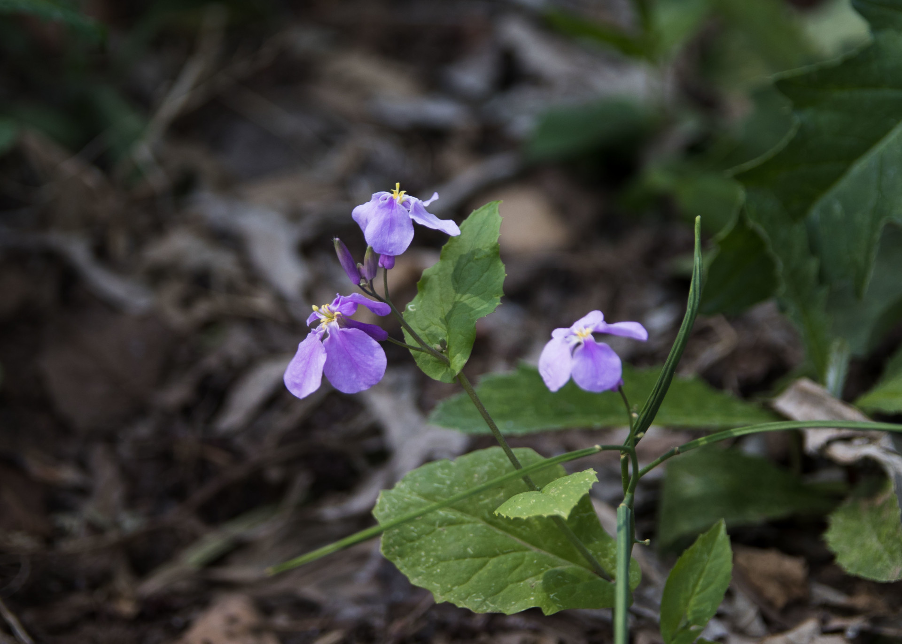

咱去年忘了更新这个系列…

iso100, 50mm, 1/1000s, f2.8
前一阵子买了二手的适马17-50 f2.8镜头，在网上看这镜头很适合新手学摄影，而且这个焦段+大光圈适用的范围也很广。遂把在家吃灰了一年的相机带回学校，打算找时间拍点风景照片。
实际上买完新镜头后我就拿它拍了几张花的照片后也没怎么出过门，本来打算5月初份去长白岛拍樱花的然而经过了五一小长假的调休，上周末的体侧，这周辽宁省又开始闹疫情，所以只好先拍点校内的风景啦。
如果你想看长白岛的樱花，不妨看一下Spring - 3这篇文章。
仅使用Raw Therapee和Adobe Lightroom对照片进行了裁剪并调整颜色，并由GIMP压缩

iso100, 33mm, 1/1000s, f2.8

iso100, 50mm, 1/1000s, f2.8

iso100, 35mm, 1/1250s, f2.8
拍摄自：2021-05-18
在大风天拍蒲公英确实是个不明智的选择。

iso100, 50mm, 1/100s, f2.8

iso100, 50mm, 1/250s, f2.8

iso100, 50mm, 1/320s, f2.8

iso100, 50mm, 1/320s, f2.8